Julio 2024

Aquí es donde empieza nuestra hermosa historia, el 27 de julio, un dia super especial. Que marcaria el inicio de nuestra vida
Agosto 2024
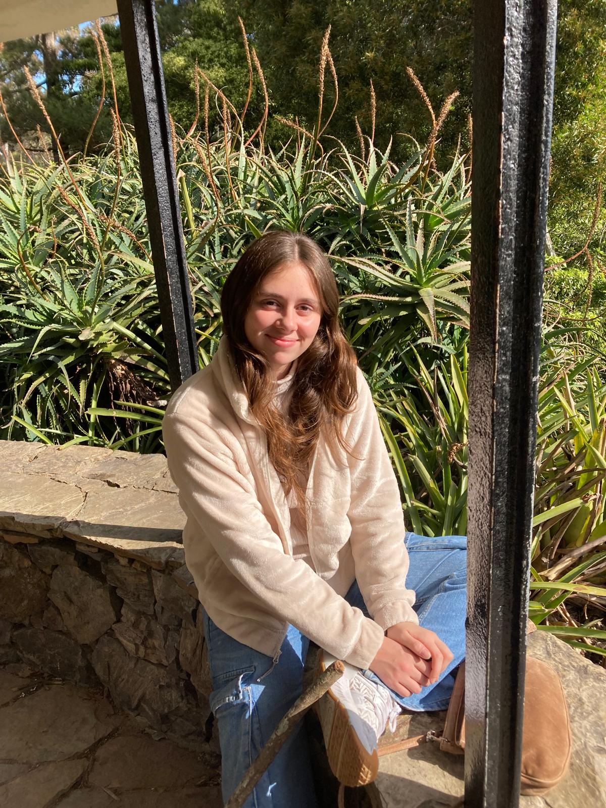Este dia fue un día super especial, Tu abuela nos llevo a pasear por el arboretrum lussich. Y pude sacar esta hermosa foto, de ti tomando sol y disfrutando del día
Septiembre 2024
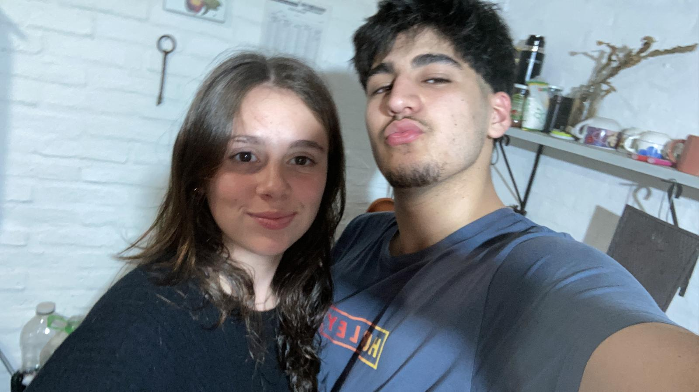En este mes llevando ya 2 meses de pareja, fue uno de los mas complicados por temas familiares, pero siempre supe que me quedaria a tu lado pase lo que pase.
Octubre 2024
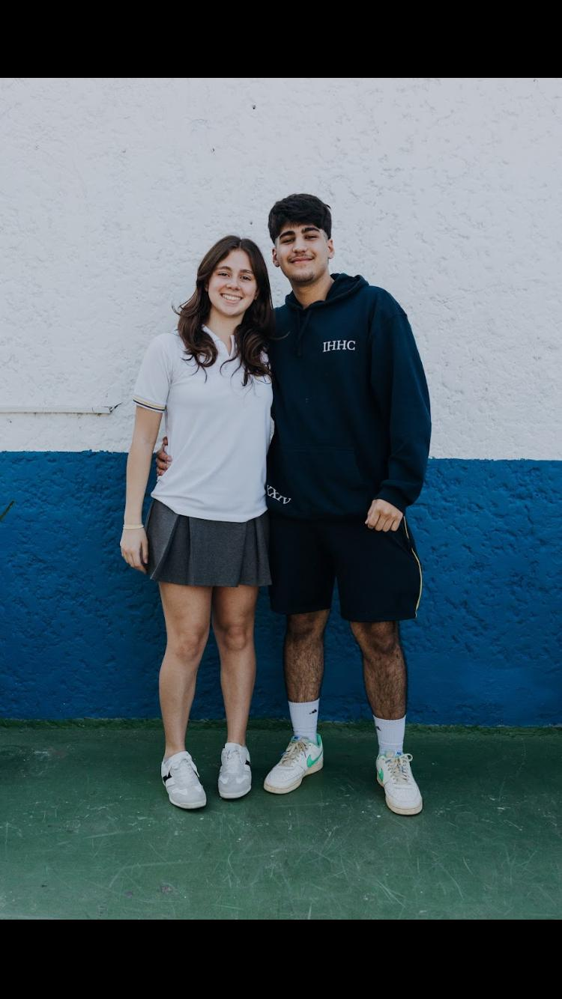Esta foto de octubre es de mis favoritas. El fotógrafo tenía toda la razón, captura a la perfección la alegría que sentíamos en ese momento. Una imagen que me trae muy buenos recuerdos.
Noviembre 2024
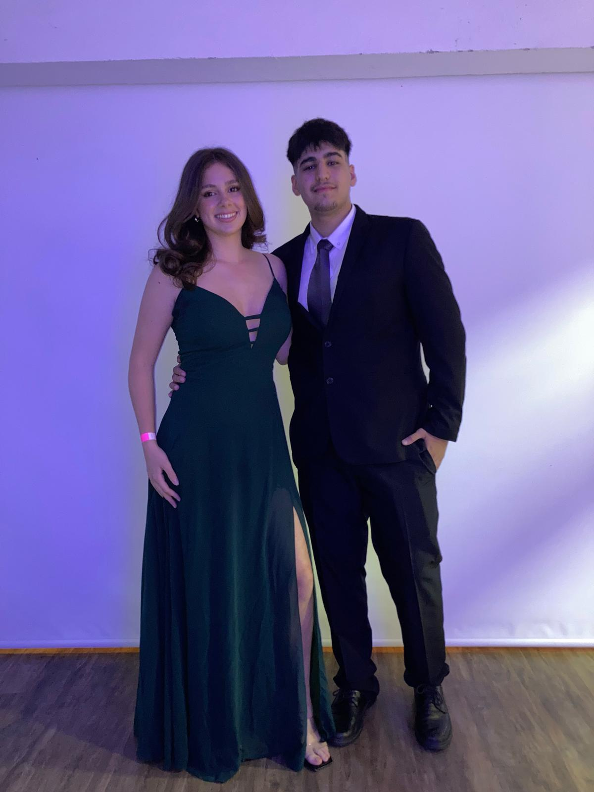El broche de oro para tantos años de dedicación. Esta foto captura la inmensa alegría y la emoción de nuestra graduación. No podría haber imaginado una mejor compañera para celebrar este momento y todo lo que vendrá.
Diciembre 2024
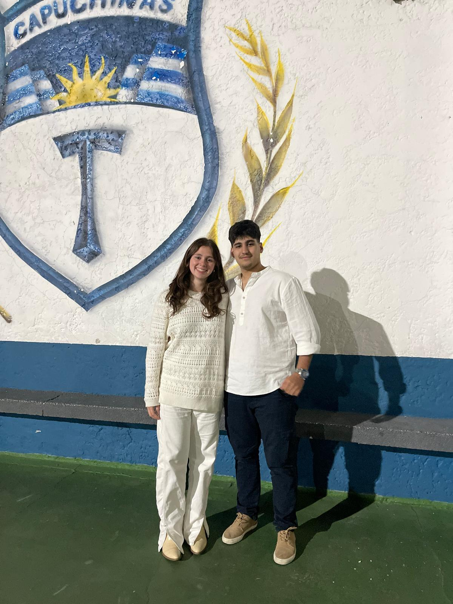Uno de los días mas recordados de mi vida sera esta, el fin de una etapa muy hermosa que me dio la posibildad de conocerte y poder conquistarte y no podria haberla imaginado de una mejor manera que sin ti a mi lado.
Enero 2025
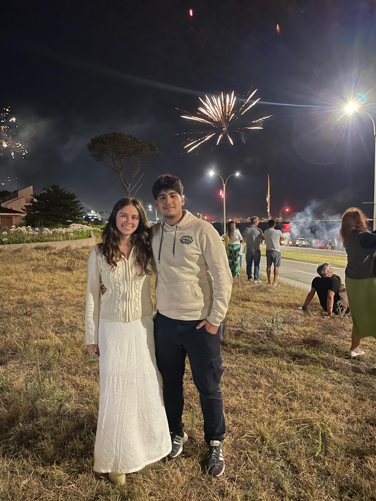Otra foto super importante dentro de mi galeria, recibiendo el año nuevo, junto al Amor de mi Vída y su Familia.
Febrero 2025
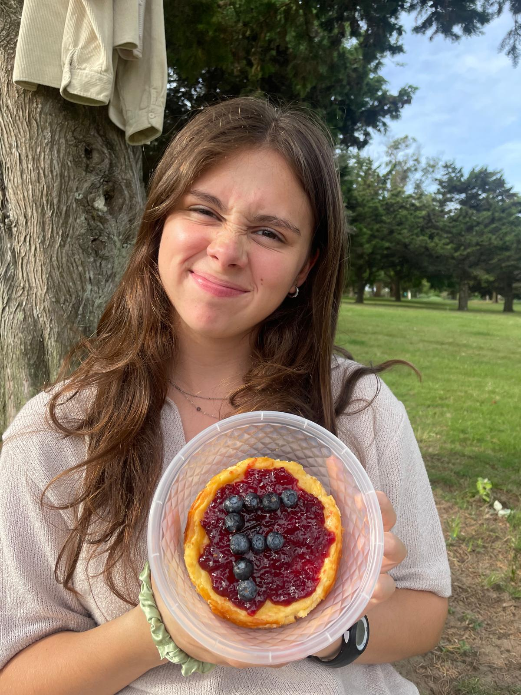Este dia fue el primer 14 de febrero que compartimos, te veias tan linda. y siempre con tu dulzura acompañada de un cheescake hecho por ti.
Febrero Parte2 2025

Hacemos una parada mas en el 28 de febrero, un día de tristeza y miedo absoluto, nos enterabamos de la peor noticia. Mi mama tenia cancer de mama, y TU estuviste ahi, esta foto es muy significativa, por que esa misma noche, pudiste sacarle una sonrisa a mi mama, cuando todo era gris y oscuro.
Marzo 2025
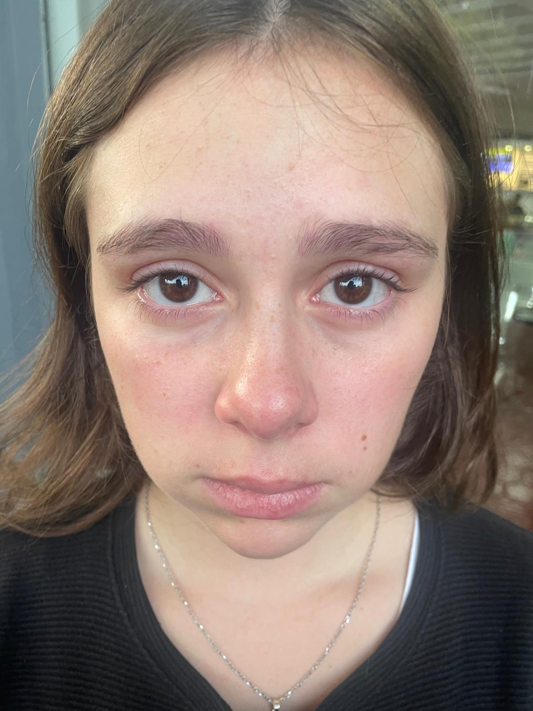Otro día super amargo... Este dia partias hacia montevideo a tu nueva casa, fue un día dificil de asumir ya que te alejabas 200km para comenzar tu carrera, pero no fue nada que el tiempo calmo.
Abril 2025
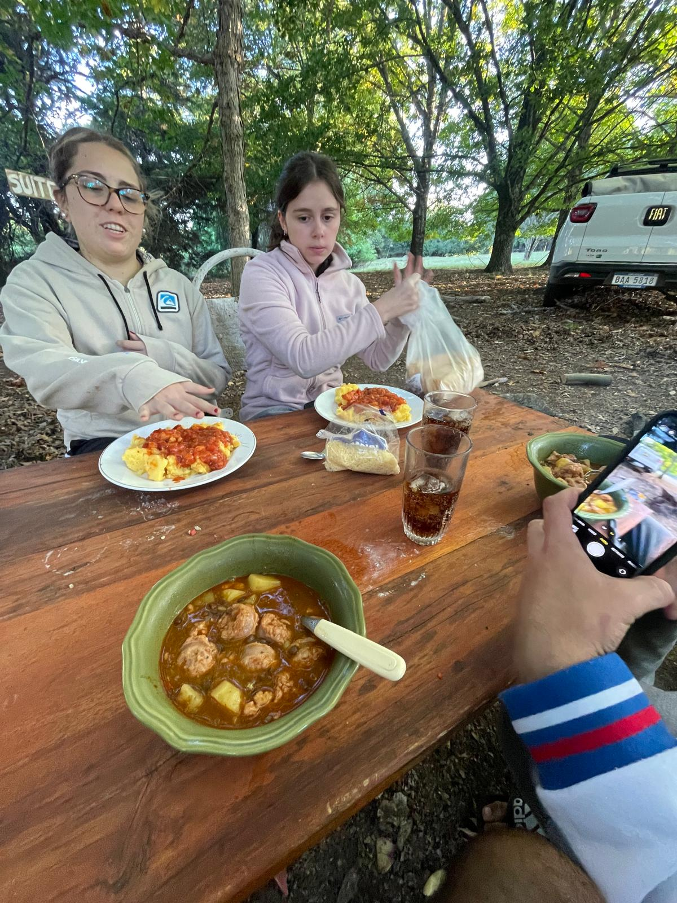Este fue uno de los mejores meses a tu lado, pudimos por primera vez salir juntos como pareja a quedarnos en la estancia del abuelo de leandro, realmente fueron unos vacaciones hermosas a tu lado.
Mayo 2025
Este fue un día super casual, donde salimos a tomar unos mates por punta del este y pasar una tarde juntos, pero tome esta foto donde te ves tan hermosa y dulce que no pude resistirme de publicar.
Junio 2025
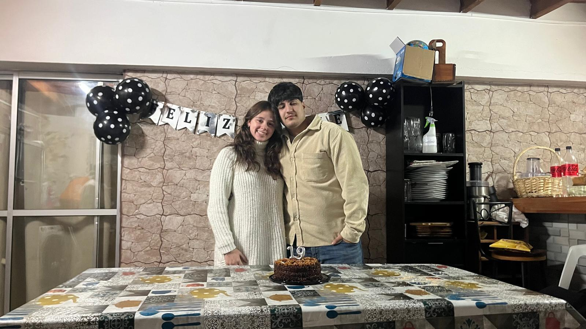8 de Junio... Un día super especial para mi... Me hiciste pasar momentos hermosos, me ayudaste a armar todos los preparativos y me hiciste pasar uno de mis mejores cumpleaños a tu lado.
Julio 2025
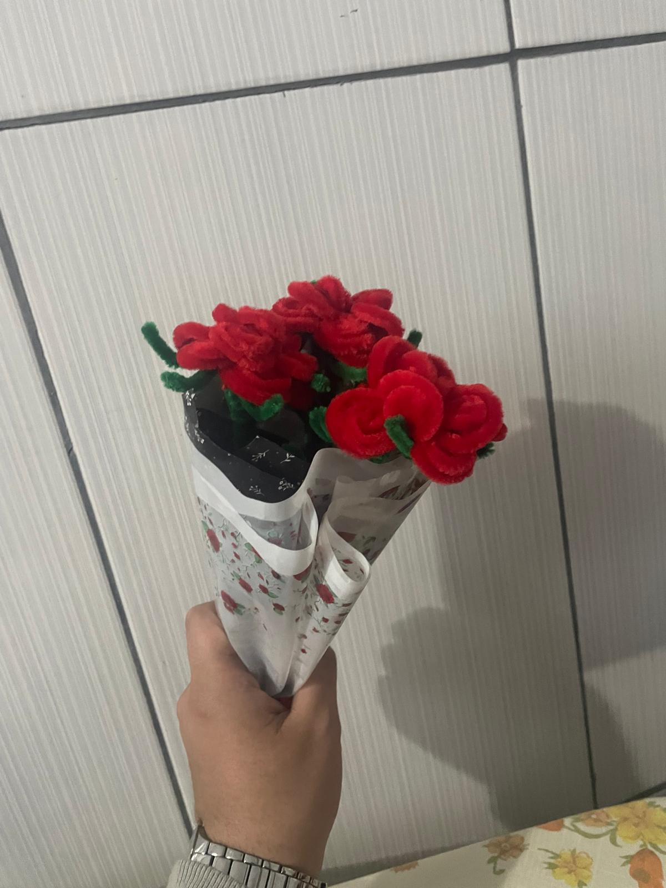27 de Julio, cumplimos 1 año como pareja, aunque no tenga foto de ese dia, quiero mostrar a todo aquel que vea esta pagina este hermoso ramo hecho a mano por tí, que tanto te costo y tanto aprecio, lo tengo alado de mi escritorio y le hecho tu perfume de vez en cuando para tenerte siempre conmigo.